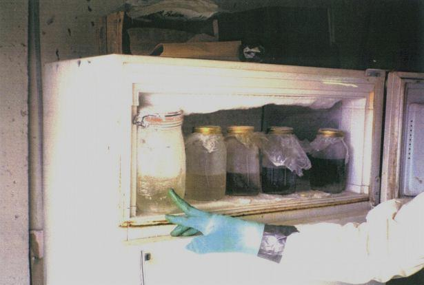

This file is a part of the Rhodium site archive. This Aug 2004 static snapshot is hosted by Erowid
as of May 2005 and is not being updated. > > Back to Rhodium Archive Index > >

Refrigerator freezer portion with five jars at various stages of the meth synth